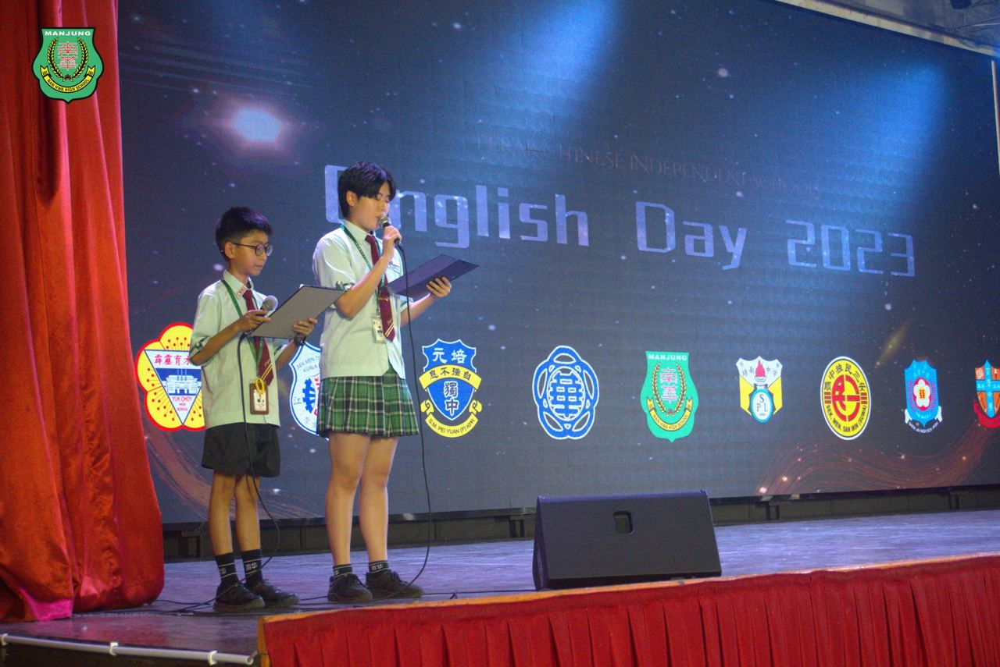
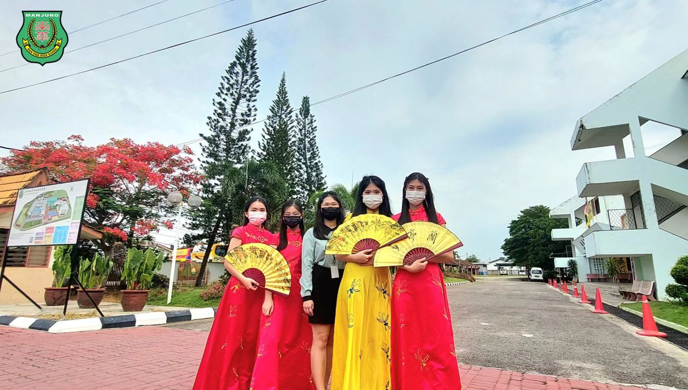
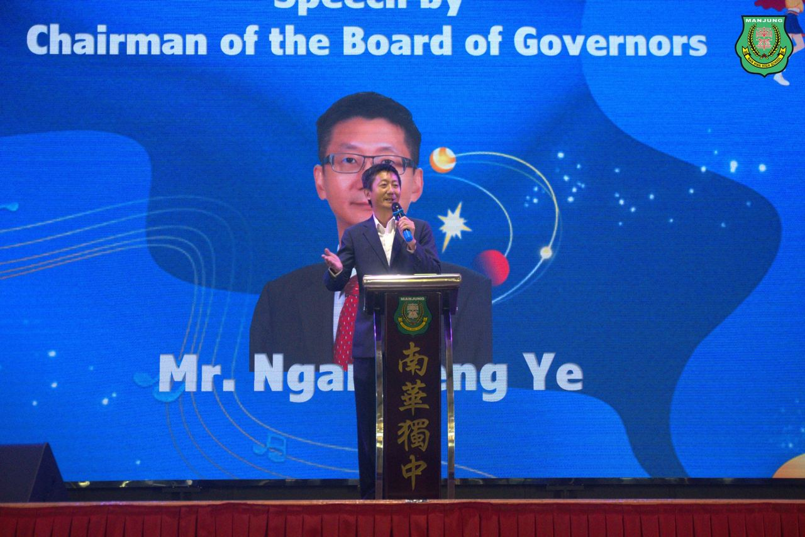
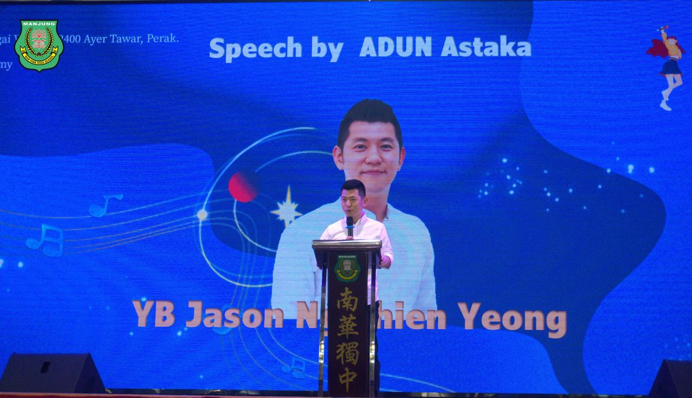
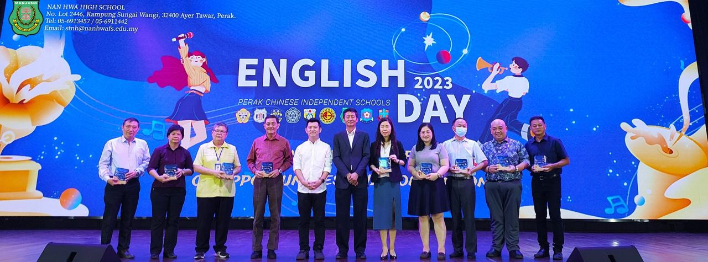
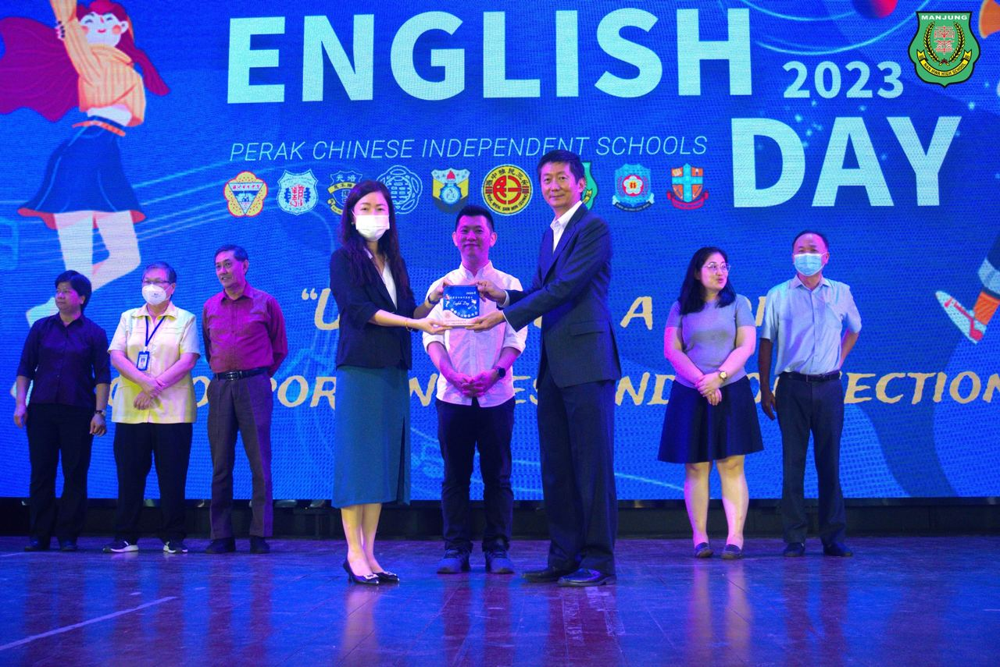
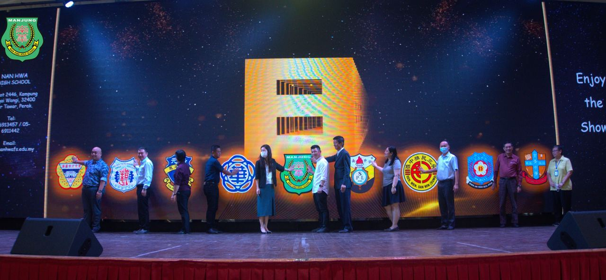

九独中英语日
九独中英语日
学生以英语开启通往世界大门
以“Unlocking A World of Opportunities and Connections（开启通往世界机遇与连结的钥匙）”为主题的九独中英语日在日前于南华独中顺利进行，此活动主旨为提供平台予九独中学生以英语为媒介语进行交流，并借此提升独中生的英语水平。现场共有近500位学生齐聚一堂，以英语为媒介语进行歌唱、舞蹈、音乐歌舞剧、舞台剧等形式表演。
南华独中董事长暨霹雳董联会主席颜登逸先生在开幕致辞上表示，九独中联合轮办英语日意义非凡，不仅提供平台让学生展示艺术才华，更重要的是学生能在正式场合上使用英语。颜登逸先生强调“在现今国际局势中，已掌握中文的独中生若能精进英语，则意味着获得比任何人更多的机会，如同掌握了能够同行世界之门，迈向成功的一把金钥匙”以此勉励出席且站上舞台、以英语展示才华的九独中学生们。
阿斯达卡区州议员黄天荣律师受邀出席九独中英语日开幕仪式时指出，英语是国际语言，它在全球范围内被用于交流、商业和外交，并且其影响力遍及世界各地。根据联合国的数据，全球有超过17.5亿人使用英语，它已成为两个使用不同母语的人进行交流的唯一方式。更重要的是，英语已被超过67个国家采纳为官方语言，成为全球商务的语言。黄天荣律师勉励学生要“抓住这机会一起学习和掌握英语，并坚信只要肯学，英语并不难”。
出席九独中英语日包括有南华独中董事长颜登逸先生、阿斯达卡区州议员黄天荣律师、校长陈丽冰（南华）、校长黎镇光（育才）、校长谢符财（深斋）、校长胡永铭（三民）、校长刘婉冰（培元）、校长庄织华（崇华）、校长郭花妹（ 育青 ）、副校长林柔青（培南）等等。
#英语日 #九独中
#UnlockingAWorldofOpportunitiesandConnection
#南华独中 #曼绒 #实兆远






